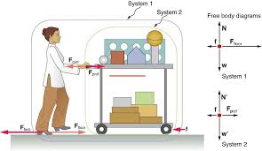

Dynamics is the study of the forces that cause objects to accelerate or maintain their motion. In AP Physics C: Mechanics, dynamics builds directly on kinematics by using Newton’s Laws of Motion, explored through the lens of calculus for deeper precision. This unit introduces the concept of net force, analyzes free-body diagrams, and explains how forces like tension, friction, normal force, and gravity affect motion. Mastery of dynamics is essential for understanding real-world systems, from cars on curves to satellites in orbit, and it serves as the engine behind all mechanical interactions explored in the course.
